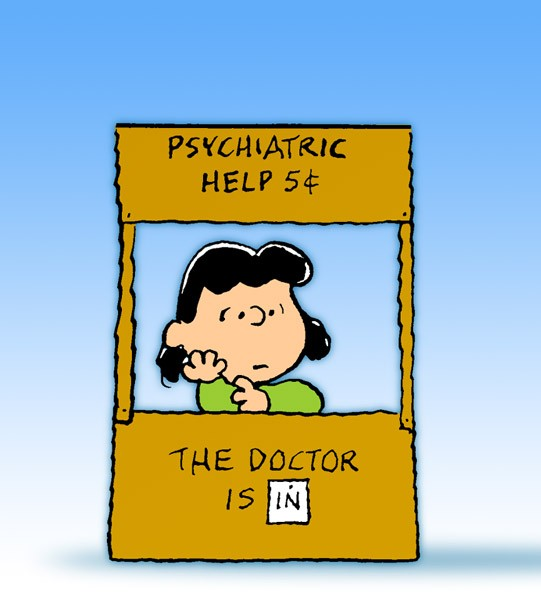
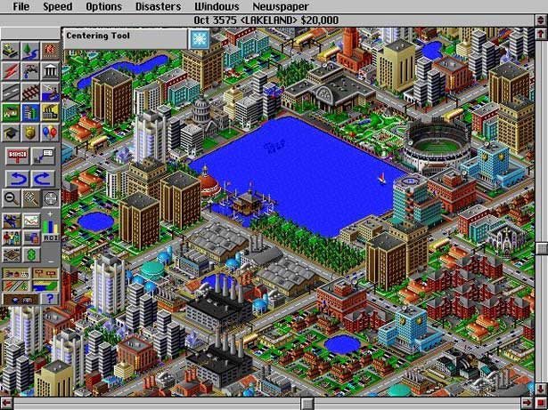
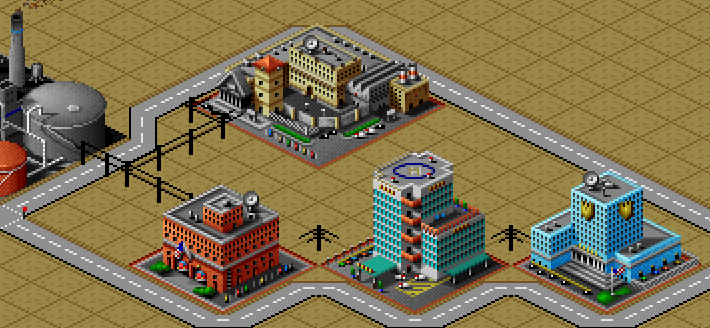
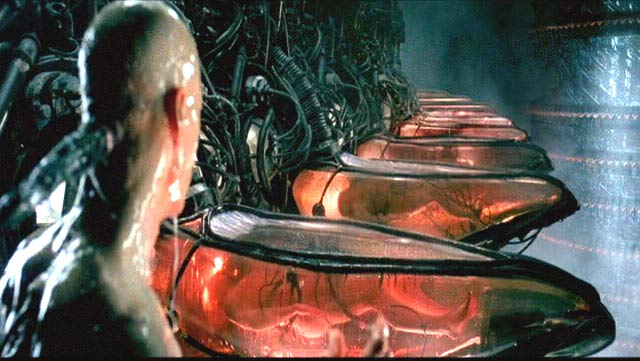

Various Issues in one minute
each!!
-- In Which I Flail My Arms Pathetically
at a Stack Of Trouble While You Yell at Me --
-- An Intense, Over-Bearing Manifesto or Lengthy, Insulting Tirade --
Q: What are your qualifications?: Nothing :D
Q: What do you know about global economics?: Nothing :D
Q: Are you in politics?: No, I just found the website and filled it in as a "hobby for God." I have a wife and kids at home and I work at a plant, if we're cool.
More FAQ
Skip down to the Issues
Q: What do you know about global economics?: Nothing :D
Q: Are you in politics?: No, I just found the website and filled it in as a "hobby for God." I have a wife and kids at home and I work at a plant, if we're cool.
More FAQ
Skip down to the Issues
"Both in love with a sexy lady", Flight of the Conchordes
Keep kickin', Libby - Ghostbusters 2
- "We should thank our lucky stars we have people of all stripes."
- Or like, "It's all just cooked right in to that big pasketti casserole-dish in
the sky."
- Or um, "Society is the Product"
- Or, "Think
Inter-Planetary"
- Or uh, "Like a car rally, not a care race"?
- Or, "We're a genius"
Patrick & Eugene, "(Whatever You Do) Don't Stop"
Makem and Clancy, All God's Critters Got a Place in the Choir
If you're like me, you find yourself thinking (on big issue after big issue):
-
The conservatives are sort of right. Kind of. Their grounds make sense. That's good stuff, but it's
partial.
-
The liberals are kind of right. Sort of. Their grounds make sense. That's good stuff, but it's partial.
They both make points that don't decay. I wonder if there's a patch we could lay on that puppy, get it to
settle down.
The world is beautiful for its variety. I learned everything I've got from people not like me.

Sometimes the other fellow will freak out and windmill at you. People hate arguing.
No! Gravity is down. That's what everyone thinks, on every side. So not just every issue really has two sides with merit, if you see what I mean.
(Freaking out about how nobody is even listening to you, for seriously)
Does anyone else find it hard to get other people to listen unless you get all bent out of shape? Well, I do. But I always regret it; I'm a peaceful man.
The only thing that ever works is to start with some compliments, to show you're there to learn. "You gotta bring cookies."
We're all such good people at heart, we've gone overboard trying to find a bad guy. Let's stop doing politics this way. Let's treat it like a group art project, like a symphony. Society is a canvas, not a battlefield.

We're all about systems that are set up to last. If your plan depends on anything that can run out, it's bad.
We have to become self-sustaining, to run on the green/nuclear/fusion jam - a machine we could sell to aliens.
So let's not argue about having a healthy environment, of all things! Stop wasting time. Get a little of that "team fire" in your belly.

Capitalism is what works, but it only works when it's in check. Like, some people are jerks.
But it has all the coolest stuff, this capitalis-mo. Free society, great products at low low prices, a productive life working for The Enormously Large Company Whom We All Love So Dearly
Communism failed, capitalism fails without feeling it all the time. Look in between, see what is like [police, fire, school, army, health] service and what is just business.
I'm workin' in the flea market so early
"The Admission Fee"
I think of taxes as the admission fee to an amusement park. If you don't like the prices, or the way they're being spent, hey, say something. But there's going to be a fee.
Gigantic. Just gigantic, way huge. A personal assistant/super-cop for every man, woman and child. Just one guy, namely you, has to work 20 hours a day while everyone else laughs at you.
No, tiny, total anarchy. The powerful using the weak as serfs; armed robbery in the open streets.
No, somewhere in between. Whatever works.
"Not much guidance there," I guess, but the extremes are pretty useless too.
[See Kill the Robots]
[See Internalized Economies]
It's not fair for corporations to write their own laws. Get money out of politics, it don't mix good.
*shrug*
Instant Run-off Voting is where you rank the candidates, and if your first choice loses, your vote goes to your second, etc.
So your vote always goes to someone you picked, and you don't have to worry about "throwing your vote away" on a third-party candidate.
They're already using this successfully in Australia for the Parliament, in various states around the world, etc.
See also instantrunoff.com
See also fairvote.org
"We need job creators, not ah belly-ache-ers." :D
More Robots
+
More People
=
Less Jobs
Robots can ultimately do just about anything, including your job, friend !!! So where are we headed here?
Robots don't need jobs, you know? That's "ash cash," as they say. Let's turn 'em off. Some of them. Anything you don't need a robot for, you know?
Let's measure wealth in cubicles instead of billions.
Look, I made a delightful graph:
Any more, when I see a building, all I see is one big potential robot, and more people who can't support their families.
Why do we need-need even one employee working in a McDonald's? You know?
We're going to have to decide to start turning some of them off to keep society working.
Kill the Robots
Good with music and cheese puffs. What's the beef, Chief? See [Mandatory Marijuana .com]
U.S. currency today is "fiat," it has no collateral. Fiat currency and a central bank and bottomless inflation go hand in hand, even to the fall of a nation over its worthless dollar. So, people into economics will insist that the gold standard is important. #EndTheFed
Here's former congressman Ron Paul:
Or, "Capitalism Rules at Most Things, Except e.g. Police or Education [...]"
So, for-profit healthcare is never going to be there for the working poor. And state healthcare, despite eliminating a middleman, is known for long wait times etc. Neither idea is getting anywhere, and instead we now have Obamacare. It's been the law for a decade, and it doesn't seem to have sunk the insurers or ruined anything. Seems like it's given folks at the bottom some peace of mind by offering them some emergency insurance. So we're going all-in, Obamacare is what works in real life.

It's a required service tile, like police or fire, see?
(On the other hand, should we all pay for your vices? Is that fair, folks?)
Yeah - 100%! Educate every person for a role that can sustain them, don't complain about welfare. Train a welder or a teacher or a nurse, train a software engineer.
Thank goodness for the unions. The unions made life livable in this country. "Some people are greedy," and working people need to stand up for themselves.
The environment, we're arguing about?? Where else you think we're gonna live, my man? Like, get your head right, we have to live sustainably, quit wasting time and energy.
It doesn't matter what caused it; it matters how we're going to fix it.
Have a little team spirit.
We support the full mixed-source energy grid [wind, big solar, nuclear, geothermal, whatever's clever], carbon sinks, and all this good sustainability tech.
Farm animals' rights belong in the picture of a better society.
My idea was "feedlot radios," play them some nice music that they like. The research shows it's good for them and they like it. Healthier for everyone, right?
If God gives you dominion or "stewardship" over something, you had better do a good job!
What, you don't like gun controllers? For like arcade games? Naw, we're fooling around.
But seriously, we have a right to armed bears, it's in the Bill of Rights. It's a serious statement: We will protect ourselves and our families however we can!
It's my stuff, and my family, and I'm apt to have a gun to protect it. "If you outlaw guns, only guns will have guns..." Wait, that's not it.
It's like how there will always be drunk driving deaths, but we don't ban alcohol? It's very sad, but it's already against the law.
We support, you know, background checks and waiting periods and fun stuff like that. Like, guns are dangerous. Whatever's clever. Maybe those fingerprint things?
While we're in the neighborhood... Folks should also recognize (if they haven't) that the arms industry has a vested interest in cultivating war. Well, they do. Uh-huh. Do to.
Nope. One-world government sounds like a bad idea. We do have global concerns, and need global conferences and such, but I fear centralized, corrupt power and the loss of autonomy. The Constitution favors a limited-"style" government.
Abortion is a tough topic. We're sensitive to the arguments made by both sides and believe abortion should be "safe, legal, and rarer and rarer."
There is no perfect solution here, and not much room for a compromise.
After years of trying to work this out, it occurred to us... this may sound wacky, but what about pre-natal incubation as an option? "Very early adoption?"
Here's an article about the technology. Dr. Yoshinori Kubawara of Japan has had great early success.
Where this conversation goes next is, what about the additional burden on our already-overburdened and deeply flawed foster care system? Who will watch these kids?
So one thing is, we can majorly fix foster care. With money. Take money out of the perpetual war budget.
We also strongly favor free birth control available at any age, and in general the rights of both parties. "Extended sphere of concern."

What's this all been about, why all the fighting over who God loves? Can we move on? The creator of the universe's name is Mike; no, it's Dan; how dare you to call the guy Mike; the heck you say, it's Steve.
Everyone's trying to say the creator of the universe is amazing and loves us. What a thing to fight about!
So yeah, we're pro-faith and family, but we're also VERY pro-liberty and pro-diversity. Just don't be a jerk, it doesn't really matter why, you know?
(Me, I'm a "surf Christian")
Look... Why do you want to have everyone in the world look and act just like you? Doesn't that sound, I don't know, boring?
Or I think like, "is a sandwich better, or a soup?" Well, if they cancel either one, the people will revolt! The question is wrong.
I believe in diversity, and I believe in the right to be different. I believe God made us that way. You're okay by us as long as you ain't a jerk :D
Let's not self-destruct now. I think like we're trying to sell this planet to some aliens, take this show on the road.
back to moderate Party.net
back to copy left out.net